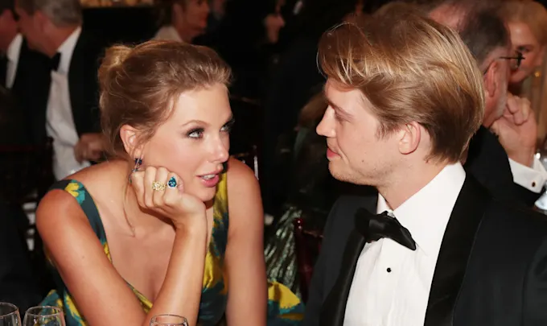

Tina Turner es reconocida como una de las cantantes más importantes del siglo XX, su poderosa voz y su actitud irreverente, fueron una fuente de inspiración para decenas de artistas que llegaron después de ella. Una de las artistas que más se vio influenciada por el trabajo de Tina fue nada menos que Beyoncé, y para rendir homenaje a la vida y obra de la Acid Queen, la cantante compartió un emotivo mensaje ante sus fanáticos en Paris. Después de siete años sin salir de gira, Beyoncé comenzó el Rennaisance World Tour, cuya primera fase dio inicio en Europa el pasado 10 de mayo. El 24 de mayo, se dio a conocer que Tina Turner había fallecido tras una larga enfermedad que hasta el momento no se ha identificado, sin embargo, diversos medios la han relacionado con los problemas renales que la aquejaron por décadas. La muerte de Tina afectó mucho a Beyoncé, por lo que aprovechó su llegada al Estadio de Francia este 26 de mayo para hablar sobre el hecho. Tras haber arrancado su show con el tema Dangerously in Love, Beyoncé hizo una pausa y pronunció las siguientes palabras: “Si eres fan mío, eres fan de Tina Turner. Porque yo no estaría en este escenario sin Tina Turner. Así que quiero que griten para que ella pueda sentir su amor”.
El pasado 24 de mayo, Taylor Swift anunció Midnights: Late Night Edition, una nueva versión de lujo de su más reciente álbum de estudio con ocho temas inéditos. La nueva versión del álbum se puede conseguir únicamente en formato físico a través de la tienda oficial de la cantautora de Pensilvania, y entre todo el material que lanzó, se destaca una pieza titulada “You’re Losing Me”, misma que según los fanáticos, habría sido escrita para Joe Alwyn, última pareja de Taylor Swift. “Tú dices: ‘No lo entiendo’, y yo digo: ‘Sé que no lo entiendes’/Pensamos que una cura llegaría con el tiempo, ahora, me temo que no lo hará/Recuerdo mirar esta habitación, nos encantaba por la luz/Ahora, sólo me siento en la oscuridad y me pregunto si es el momento”, arranca Swift con estas palabras el melancólico tema. Fue el pasado 8 de abril que los tabloides de todo el mundo compartieron la noticia de que Taylor Swift y Joe Alwyn terminaron su relación aparentemente de manera amistosa después de seis años estando juntos. Si bien, ninguna de las partes ha hablado al respecto, pareciera que en esta nueva canción Swift no sólo se despide de Joe, sino que también comparte la razón de su ruptura, la cual se habría dado por que Joe no quiso casarse con Taylor.
Según rumores difundidos por la prensa europea, Lionel Messi tendría pensado no extender su contrato con el PSG, por lo que sería jugador libre a partir de junio. Hasta el momento, la información indicaba que el argentino iba a firmar por un año más con el equipo francés, pero ahora aseguran que ganar el mundial "le hizo cambiar su pensamiento". El periodista español Gerard Romero fue quien aseguró que, tras el Mundial, el crack argentino cambió su manera de pensar y estaría abierto a evaluar otras opciones. “Leo Messi no tiene intención de renovar su contrato con el PSG. La victoria mundialista le hizo cambiar el pensamiento al argentino”, dijo Romero en su vivo de Twich.